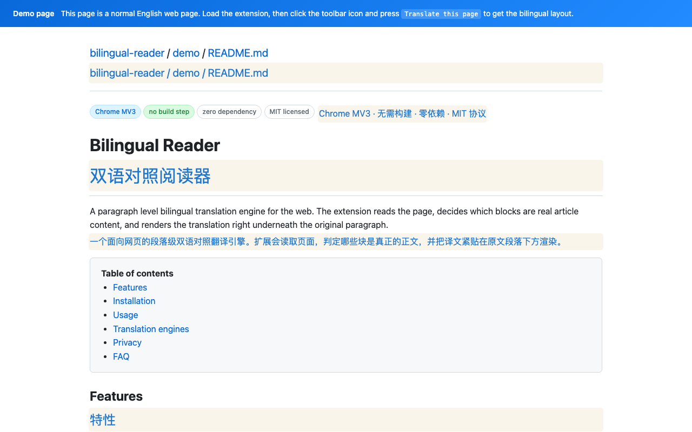

Chrome 扩展 · v1.4.0 · MIT 开源
Bilingual Reader
双语对照翻译
把网页正文逐段翻译，让原文与译文同屏对照。支持自备大模型 API，也支持本地部署的模型。

Chrome 应用商店版本已提交审核，审核通过后会自动上架。当前可从 GitHub Releases 下载并手动安装。
开始使用
- 从 GitHub Releases 下载扩展包，解压后在 Chrome 的扩展程序管理页打开开发者模式，加载已解压的扩展。
- 打开扩展设置，在「翻译引擎」中添加供应商，填写自己的接口地址、模型与 API Key，测试连接并保存。
- 打开普通网页，点击「翻译此页」或按 Alt+T。可切换双语、仅译文、仅原文，并随时还原。
先试一试
无需 Key：设置 → 翻译引擎 → 添加「演示模式（本地示例，无需 Key）」→ 保存，然后打开 英文演示页 并启动翻译。演示模式使用本地词表，只用于体验排版与操作流程，不代表真实机器翻译质量。
数据如何处理
扩展作者不运营接收正文或密钥的服务器。真实翻译会把处理后的正文、提示词及鉴权信息直接发送到你配置的模型服务；脱敏规则不能保证识别全部敏感内容。请阅读 完整隐私政策。
本项目的灵感来自 沉浸式翻译。翻译风格使用了其公开的 immersive-translate/prompts 中的场景提示词，并按本项目的需要做了适配。感谢沉浸式翻译团队及提示词贡献者。